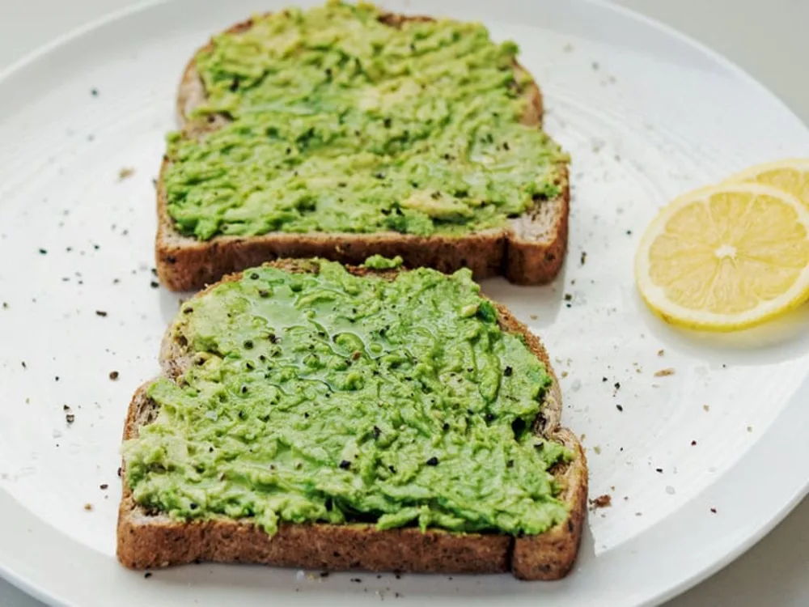

My Recipe: Avocado Toast
Introduction
Avacado toast is a great meal and this recipe is pretty easy to make. In some countries in the Americas, avocado toast for breakfast has been such a staple in the diet that there is no documentation.

Ingredients
- 3 avocados
- Salt
- lemon juice
- ½ teaspoon of mustard
- 2 tablespoons of nature yogurt
- 4 slices of bread
- 50 g ham
- 2 tablespoons of mayonnaise
- 1 egg
Instructions
- Boil an egg at 70°C.
- Cut the avocado in half.
- Mix the avocado in a bowl with a fork.
- Put the bread in a toaster.
- Mix in the salt, lemon juice, mustard, yogurt, and the mayonnaise.
- Take out the egg, cut it and add it to the bowl.
- Cut the ham and add it to the bowl.
- put it on the toast and you’re done.